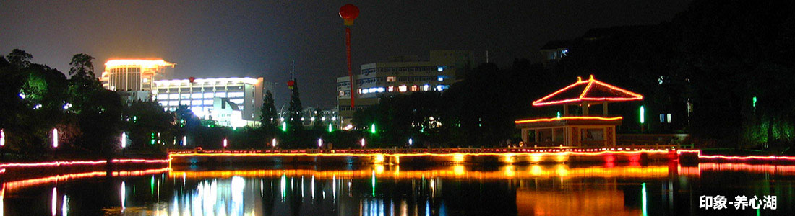

学院新闻
+更多
- 信息学院获批江西省第二批省级人才工作示范点 2017-03-13
- 信息与通信工程”学科举办系列学术沙龙，有力促进学科建设 2017-01-16
- 信息学院成功举办“双基”计算机应用能力大赛 2016-12-26
- 信息学院召开2016年度社会治安综合治理总结表彰大会 2016-12-23
- 信息学院成功举办2015-2016学年优秀学生暨校运会表彰大会 2016-12-23
- 【中国文明网】华东交大举行南京大屠杀纪念活动 2016-12-14
- 第四届江西省大学生服务外包创新创业大赛信息学院战绩斐然 2016-12-12
- 第十四届心理剧“在路上”总决赛落幕 信息学院连续三年获得冠军 2016-12-06
- 信息学院成功举办第五届“双基”物联网创新设计大赛 2016-11-27
- 情景剧中的别样班会：信息学院15级通信卓越班召开“校园贷”安全主题班会 2016-11-25
- 信息学院举行第二十八期入党积极分子培训班结业典礼 2016-11-22
- 【央广网】华东交大学子原创12部微电影 加固校园安全屏障 2016-11-22
- “心向安全，行之所至” 信息学院举办安全微电影大赛 2016-11-19
- 信息学院16级通信卓越班赴刘将军庙开展志愿... 2017-03-20
- 信息学院16级信息工程一班开展素质拓展活动 2017-03-20
- 信息学院16级信息工程一班开展素质拓展活动 2017-03-20
- 信息学院五期世纪英才携手青协赴公交车站送... 2017-03-20
- 信息学院心素会举办“重拾自我”心灵茶座活... 2017-03-16
- 信息学院青年志愿者协会开展“碳排放，今日... 2017-03-12
- 刘将军庙社区优秀志愿者表彰大会顺利召开 2017-03-11
- 信息学院召开第十六届学生会及团学组织全体... 2017-03-11
- 信息学院青年志愿者协会开展“倡导校园文明... 2017-03-06
微信微博